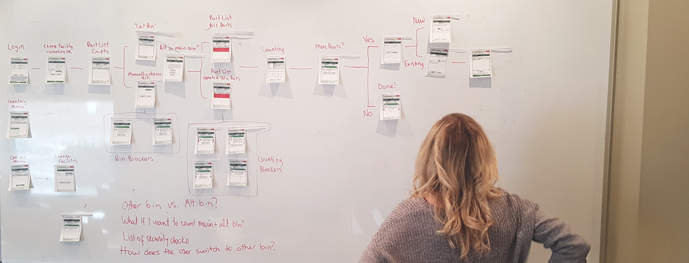

Cetaris
Product Design, User Research, Project Management, Collaboration
I’m a Product Designer
@Cetaris where I drive a consistent view of our users to empower our team
to create reliable and delightful products.
2017 Accomplishments
Helped design and launch our first mobile web app
Built an icon grid and redesigned our product icon set
Created templates for our User Research
Redesigned company brand & identity
2018 Goals
Build out a live design system
Design & launch our second mobile app
Implement a more focused UXR process
Update website IA
